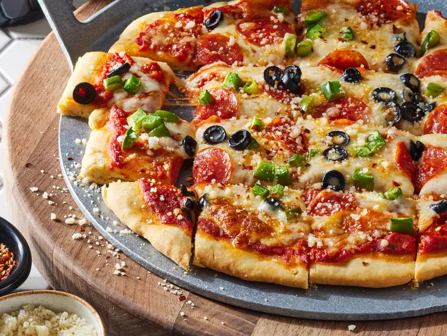

Massa de pizza

Descrição
Esta receita de massa de pizza sem fermento não só é mais rápida que a massa tradicional, como também rende uma massa de pizza caseira perfeita sempre!
Ingredientes
- Farinha
- Fermento em pó
- Sal
- Leite
- Azeite de oliva
Etapas para o preparo da massa
- Misture os ingredientes secos e depois adicione os molhados até formar uma massa
- Vire a massa e sove
- Molde a massa em uma bola e deixe crescer
- Abra a massa formando um círculo.
Home